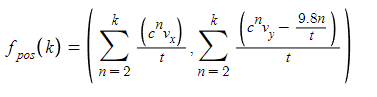

Formula for a projectile's position at some point in time given a pseudo-airdrag constant and an inital horizontal/vertical velocity.
It's not at all realistic/accurate but gets the right idea.
Variables:
c - Air drag (ish) constant. Between 0 and 1, closer to 1 is more aerodynamic.
vx - Initial horizontal velocity, arbitrary units
vy - Initial vertical velocity, arbitrary units

This isn't the cleanest formula since I rearranged a function I made which generated a list of points along the projectile's path at irregular intervals to make this.

Much simpler integral version
Function to give kth point along a projectile's path.
